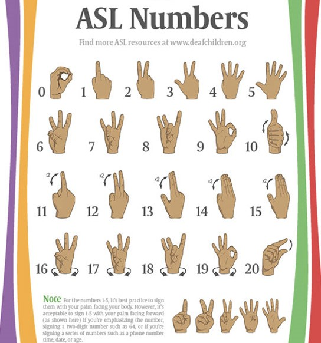

Learning ASL numbers is a key part of basic American Sign Language instruction. Even if you only know a few signs, once you can count and fingerspell, your communication will improve by leaps and bounds.People learning sign language, they find it tricky mastering numbers from 1 to 10. Its not just about memorizing; its also about the hand shapes and movements.
